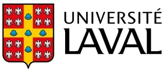
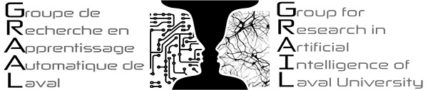
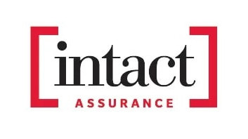

Short Bio
After completing my undergraduate studies in actuarial sciences, I reoriented myself: I am currently doing a Ph.D. in computer science at Université Laval, under the supervision of Pascal Germain. I plan to complete my Ph.D. in summer 2026, and am currently looking for a postdoc opportunity to expand my contributions in the fields of PAC-Bayesian (machine learning) theory and interpretability/explainability in machine learning.
Research Interests
- Machine learning theory
- Generalization bounds
- Artificial neural networks
- Interpretability
- Explainability
- Ethics
Publications
Peer-Reviewed Works (conferences, journals, workshops)
Generalization Bounds via Meta-Learned Model Representations: PAC-Bayes and Sample Compression Hypernetworks
[paper]
Application of machine learning tools to study the synergistic impact of physicochemical properties of peptides and filtration membranes on peptide migration during electrodialysis with filtration membranes
[paper]
Selected Reports
PAC-Bayesian Generalization Guarantees for Fairness on Stochastic and Deterministic Classifiers
[ArXiv]
A Framework for Bounding Deterministic Risk with PAC-Bayes: Applications to Majority Votes
[ArXiv]
On the Relationship Between Interpretability and Explainability in Machine Learning
[ArXiv]
Teaching
Mathématiques pour informaticiens (2023, 2024) - Université Laval, Département d'informatique et de génie logiciel
Affiliations


